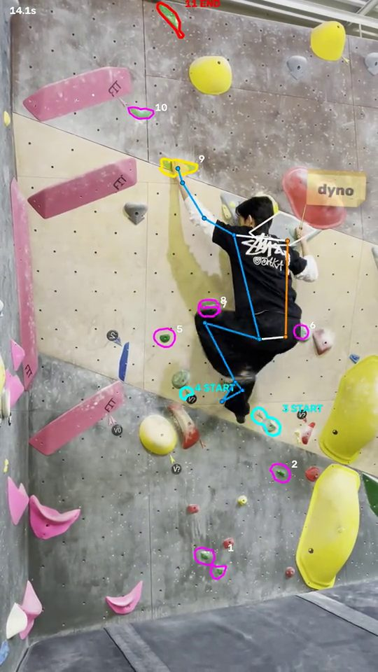
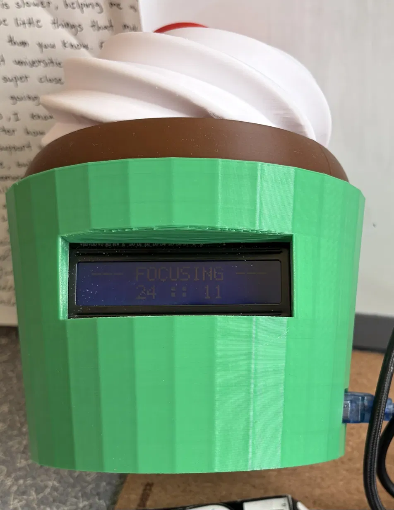
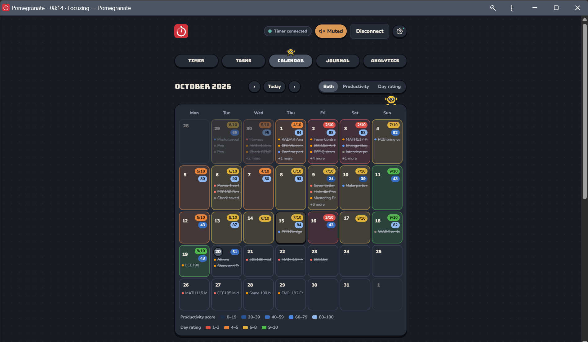
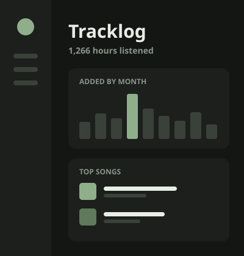

BetaVision
An app that analyzes my climbing videos, tracking my body and showing which hold each hand and foot is on.
Things I've built. Check out the code, or read how I made each one.

An app that analyzes my climbing videos, tracking my body and showing which hold each hand and foot is on.

A desk robot that times my study sessions and keeps me on track.

An app that plans your day, times your focus, and tracks how it went.

A web app that turns my Apple Music library into a SQL database and shows my listening habits.